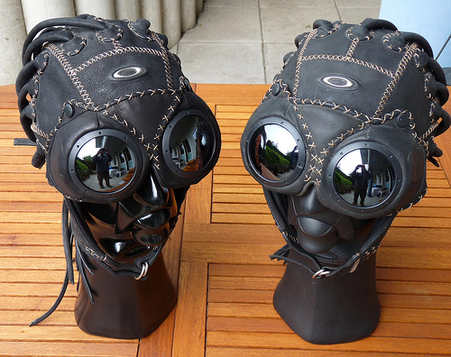

Ap-Vest Masculino

Ap-Vest Feminino

Touca da Medusa

A marca que dominou o Mundo
Oakley, Inc. é uma empresa norte-americana fundada em 1975 por Jim Jannard. Os principais produtos da marca são óculos de sol e óculos esportivos, principalmente de esqui. A empresa também fabrica relógios, roupas, bolsas, tênis, mochilas, óculos, bonés, óculos de futebol americano, guarda chuvas, entre outros produtos.
A Oakley foi iniciada em 1975 por Jim Jannard em sua garagem, com um investimento inicial de U$300. O nome Oakley foi dado em homenagem ao cão de Jim Jannard, um Setter inglês. Jannard inicialmente vendia em eventos de motocross o que ele chamava de "The Oakley Grip". Jannard também vendia borrachas para guidão de motocicletas. O material utilizado no produto era chamado de "Unobitanium", uma criação própria de Jannard que não escorregava da mão dos pilotos quando molhado. O Unobitanium é até hoje usado nos óculos da Oakley, principalmente no suporte do nariz.
Algum tempo depois, Jannard percebeu que somente a venda das borrachas para os guidões não havia trazido tanto sucesso para a marca. Em 1980, Jannard lançou um novo par de óculos chamado O-Frame, com o logotipo da marca na alça para que fosse reconhecida, porém não obteve sucesso com o lançamento, que foi extinto tempos depois. Em 1984 a Oakley lança um óculos escuros chamado Eyeshade, que era feito de plástico e tinha lentes removíveis. Esses óculos foram popularizados por Greg LeMond, vencedor do Tour de France, e outros ciclistas profissionais. A Oakley começou a introduzir novos modelos de óculos de sol, entre eles o Blade, o Razor Blade, Frogskins e Mumbos, que depois evoluiram para a série de óculos M-Frame.[1] A Oakley assinou em setembro de 2004 um acordo de quatro anos para a fabricar os óculos utilizados na Fox Racing. Esses óculos são comercializados com o nome de Fox Eyewear.[2] Em 2006, a Oakley adquiriu o grupo Oliver Peoples, uma fabricante de óculos de luxo. Em 21 de julho de 2007, o grupo italiano Luxottica anunciou um plano de fusão com a Oakley em um negócio de U$2,1 bilhões. Em 15 de novembro de 2007 a fusão foi concluída.[3]
